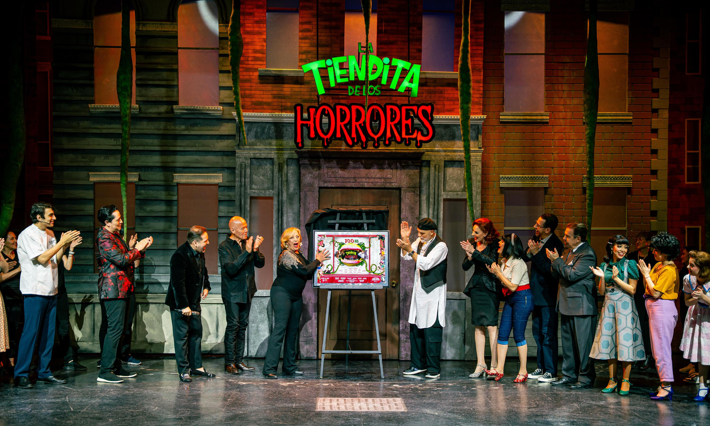
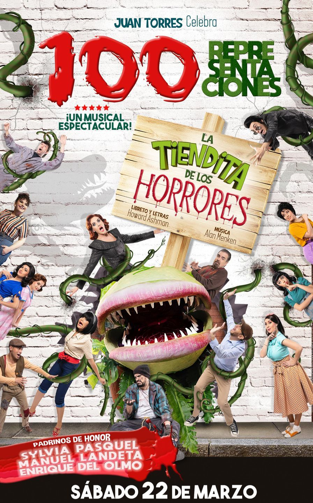

Con un teatro lleno de energía y emoción, el pasado 22 de marzo de 2025 se celebró la función número 100 de La Tiendita de los Horrores, una comedia que se aleja de lo convencional y ha conquistado al público de la CDMX. La noche estuvo llena de sorpresas y de la presencia de diversas personalidades del mundo del espectáculo, que se dieron cita en el emblemático Teatro Hidalgo para disfrutar de esta obra única. La Tiendita de los Horrores combina a la perfección elementos de terror, comedia y música, creando una experiencia que no deja indiferente a nadie. Este clásico del teatro musical, escrito por Howard Ashman y Alan Menken, sigue siendo un referente del género, manteniendo su frescura y encanto a pesar del paso del tiempo.
La tiendita de los horrores, protagonizada por Chantal Andere, Oscar Acosta y Juan Fonsalido y sin dejar atrás a Sergio Jurado y Jair Campos promete mucho y da mucho. El argumento gira en torno al dueño de una florería que está apunto de quebrar hasta que uno de sus empleados le muestra una planta muy peculiar que cambiará la vida de cada uno de los personajes. Entre melodías cautivadoras y momentos de tensión, el público vive una historia que, con su estilo único, sigue emocionando y manteniéndose relevante a lo largo del tiempo.
“100 representaciones se dicen fáciles pero no lo son menciono : Chantal Andere ”>
Sobre todo porque esta función número 100 tuvo de padrinos a tres de los actores que protagonizaron por primera vez en México esta icónica obra de teatro: Sylvia Pasquel, Manuel Landeta y Enrique del Olmo. Estos talentosos intérpretes, que fueron los encargados de dar vida a los personajes en su estreno en el país, fueron testigos emocionados de cómo la obra ha perdurado a lo largo de los años, convirtiéndose en un referente dentro del teatro. Su presencia en esta función especial no solo celebró el éxito continuo de la obra, sino también el legado que han dejado en la historia del teatro nacional. Ya que mencionaron varios de sus personajes iconicos en la industria como: Sugar, José el soñador y por su puesto Jesus Cristo Superestrella, papeles que han interpretado en el pasado.
La ocasión estuvo llena de recuerdos, anécdotas y un profundo agradecimiento por el impacto que la pieza ha tenido en el público y en el mundo teatral. Juan Torres agradeció al público por cumplir 10 años al frente del Teatro Hidalgo, sin embargo mencionó que solo 2 semanas más estará La tiendita de los horrores, ya que necesita un suspiro y habrá nuevas cosas próximamente. El montaje con dirección de escena y vocal: Ricardo Díaz quien también estuvo presente ha sido un éxito rotundo.
“Si ustedes vieran nuestra planta se morirían de risa, la producción es impecable y fascinante mencionó Sylvia Pasquel”>
Con funciones los viernes a las 20:30 horas, los sábados a las 17:30 y 20:30 horas, y los domingos a las 17:30 horas, La Tiendita de los Horrores se despide el próximo 6 de abril, dejando huella en el Teatro Hidalgo y en la memoria de todos los que han disfrutado de esta producción.
“El próximo 6 de Abril baja el telón pero es sólo el comienzo de la primera temporada mencionó: Juan Torres”
Con funciones los viernes a las 20:30 horas, los sábados a las 17:30 y 20:30 horas, y los domingos a las 17:30 horas, La Tiendita de los Horrores se despide el próximo 6 de abril, dejando huella en el Teatro Hidalgo y en la memoria de todos los que han disfrutado de esta producción. Durante su temporada, la obra ha cautivado a miles de espectadores con su mezcla única de comedia, terror y música, convirtiéndose en un clásico moderno del teatro mexicano.
A lo largo de su permanencia en el escenario, ha sido aclamada por su impecable dirección, las destacadas interpretaciones de su elenco y la producción de alto nivel que ha logrado mantener viva la esencia del famoso musical. Esta última función promete ser un cierre emotivo y memorable, un verdadero tributo a una de las obras más queridas por el público.